── Attaching core tidyverse packages ──────────────────────── tidyverse 2.0.0 ──
✔ dplyr 1.1.4 ✔ readr 2.1.6
✔ forcats 1.0.1 ✔ stringr 1.6.0
✔ ggplot2 4.0.1 ✔ tibble 3.3.0
✔ lubridate 1.9.4 ✔ tidyr 1.3.1
✔ purrr 1.2.0
── Conflicts ────────────────────────────────────────── tidyverse_conflicts() ──
✖ dplyr::filter() masks stats::filter()
✖ dplyr::lag() masks stats::lag()
ℹ Use the conflicted package (<http://conflicted.r-lib.org/>) to force all conflicts to become errors
Attaching package: 'igraph'
The following objects are masked from 'package:lubridate':
%--%, union
The following objects are masked from 'package:dplyr':
as_data_frame, groups, union
The following objects are masked from 'package:purrr':
compose, simplify
The following object is masked from 'package:tidyr':
crossing
The following object is masked from 'package:tibble':
as_data_frame
The following objects are masked from 'package:stats':
decompose, spectrum
The following object is masked from 'package:base':
union
Attaching package: 'Matrix'
The following objects are masked from 'package:tidyr':
expand, pack, unpackFinpudsning af analyse og visualisering af netværk
ggplot + ggraph
I denne session skal vi se på visualiering af netværk med ggraph-pakken: “En grafisk grammatik for relationel data”, som bygger oven på ggplot2.


Begge dele følger den samme underliggende visualiseringsfilosofi/-grammatik.
Man initialiserer et plot (et underliggende koordinatsystem) og bringer et datasæt i spil
Man tilføjer lag (
geom_*-funktioner), som definerer hvordan data skal repræsenteres.I ggraph() finder der to grupper af lag for hhv. edges og noder
geom_edge_*
geom_node_*
Justerer scaler (for akser, størrelser, farver, gennemsigitighed, former osv.) (
scale_*-funktioner)Ændrer på akse og legends forklaringer med
guides()-funktionen, kombineret med fx.guide_legend()og som tillader os at ændre på hvordan en legend ser ud ellerguide_axis()som tillader os at ændre på hvordan en akse ser ud. I begge tilfælde kan vi gøre brug af forskelligetheme-objekter: fxlegend.positionellerlegend.textkombineret med ettheme_elementsom fxelement_text()Tilføjer prædifinerede temaer med
theme_*-funktioner for hele plottet.
De forskellige muligheder i ggplot kan findes her og det samme for ggraph her
Lad os komme igang.
Indlæs pakker
Indlæs data
Lad os arbejde med noget vi kender godt. Vi indlæser den17 fra datamappen:
den <- read_csv("data/den17-no-nordic-letters.csv")Rows: 56849 Columns: 10
── Column specification ────────────────────────────────────────────────────────
Delimiter: ","
chr (8): name, affiliation, role, gender, tags, sector, type, description
dbl (2): cvr_person, cvr_affiliation
ℹ Use `spec()` to retrieve the full column specification for this data.
ℹ Specify the column types or set `show_col_types = FALSE` to quiet this message.Subset data
Og udvælger en række tags, der tilsammen udgør finansverdenen i den17
finans_tags <- c("Finance", "FINA", "Banks", "Pensions", "Insurance", "Venture- og kapitalfonde")herfra har vi to muligheder.
1) Enten subsetter vi den til alle positioner, der har et af de pågældende tags:
den_finans1 <- has.tags(den, tags = finans_tags, result = "den", mode = "or") Matched positions
Finance 2266
FINA 692
Banks 899
Pensions 454
Insurance 584
Venture- og kapitalfonde 130
head(den_finans1, 10)# A tibble: 10 × 10
name affiliation role gender tags sector type cvr_person cvr_affiliation
<chr> <chr> <chr> <chr> <chr> <chr> <chr> <dbl> <dbl>
1 Asger… A/S DANSK … Exec… Men Corp… Corpo… Virk… 4003993896 73314712
2 Hans … A/S DANSK … Vice… Men Corp… Corpo… Virk… 4004141577 73314712
3 Lars … A/S DANSK … Memb… Men Corp… Corpo… Virk… 4003896224 73314712
4 Micha… A/S DANSK … Memb… Men Corp… Corpo… Virk… 4004121861 73314712
5 Thork… A/S DANSK … Chai… Men Corp… Corpo… Virk… 4004010529 73314712
6 Gille… ALD Automo… Memb… Men Corp… Corpo… Virk… 4006419783 87573613
7 Guill… ALD Automo… Chie… Men Corp… Corpo… Virk… 4004174889 87573613
8 Micha… ALD Automo… Memb… Men Corp… Corpo… Virk… 4004256917 87573613
9 Tim T… ALD Automo… Chai… Men Corp… Corpo… Virk… 4004038684 87573613
10 Asger… Alm. Brand Othe… Men Corp… Corpo… Virk… 4000077224 77333517
# ℹ 1 more variable: description <chr>2) Eller også vælger vi at få en vector med navnene på alle de affiliations, der har et af de pågældende tags:
finans_affils <- has.tags(den, tags = finans_tags, result = "affil", mode = "or") Matched positions
Finance 2266
FINA 692
Banks 899
Pensions 454
Insurance 584
Venture- og kapitalfonde 130
head(finans_affils, 10) [1] "A/S DANSK ERHVERVSINVESTERING"
[2] "ALD Automotive"
[3] "Alm. Brand"
[4] "Alm. brand - Repraesentantskab (Medlemmer)"
[5] "Alpha Holding"
[6] "ALTOR EQUITY PARTNERS A/S"
[7] "Ankenaevnet for Forsikring (Medlemmer)"
[8] "AP Pension"
[9] "Arbejdernes Landsbank"
[10] "Arbejdsmarkedets Erhvervssygdomssikring (AES) (Departementet)"Gør vi dét, har vi nemlig mulighed for også at udvælge særlige ting, der ikke har et af de pågældende tags. Det kunne fx være at vi gerne vil have alle VL-grupper med også. Vi laver derfor en vektor med navnene på alle tværgående netværksgrupper, hvor der sidder et individ, som har et finans tag:
finans_ind <- has.tags(den, tags = finans_tags, result = "name", mode = "or") Matched positions
Finance 2266
FINA 692
Banks 899
Pensions 454
Insurance 584
Venture- og kapitalfonde 130
head(finans_ind)[1] "Asger Ib Mardahl-Hansen" "Hans Ole Jensen"
[3] "Lars Groenborg Eskesen" "Michael Noergaard"
[5] "Thorkild Engell Jensen" "Gilles Jean-Noël Momper"den %>% count(type)# A tibble: 10 × 2
type n
<chr> <int>
1 Begivenhed 2086
2 Folketing 241
3 Fond (CVR) 1783
4 Kommission 772
5 Netvaerk (VL-gruppe) 4318
6 Organisation 14819
7 Snowball 11
8 Stat 10419
9 Virksomhed (CVR) 9722
10 <NA> 12678vl_grupper <- den %>%
filter(type == "Netvaerk (VL-gruppe)" & name %in% finans_ind) %>%
distinct(affiliation) %>%
pull(affiliation)Når vi har de to vektorer med affiliation-navne kan vi bruge dem til at subsette data med:
den_finans2 <- den %>% filter(affiliation %in% c(finans_affils, vl_grupper))
dim(den_finans2)[1] 5684 10Konstruktion af netværksmatricer
Lad os fortsætte med den_finans2 (hvor vi har inkluderet netværk også)
individ x affiliation matrice:
bi_adj <- xtabs(den_finans2, formula = ~name + affiliation, sparse = T)Fra individ x affiliation matricen, kan vi lave to matricer (det er vigtigt at Matrix pakken er læst ind her - library(Matrix))
Individ x individ matricen:
adj_ind <- bi_adj %*% t(bi_adj) affiliation x affiliation matricen:
adj_affil <- t(bi_adj) %*% bi_adjKonstruktion af netværksobjekter
two-mode (bipartite)
fra individ x affiliation matricen (bi_adj) laver vi et bipartite/two-mode netværksobjekt
net_twomode <- graph_from_biadjacency_matrix(bi_adj, directed = FALSE, multiple = FALSE) %>% simplify()
net_twomodeIGRAPH fbc4a48 UN-B 5147 5684 --
+ attr: type (v/l), name (v/c)
+ edges from fbc4a48 (vertex names):
[1] Aage Almtoft --Middelfart Sparekasse
[2] Aage B. Andersen --Foreningen OEstifterne - Repraesentantskab (Medlemmer af delegeretforsamling)
[3] AAge Dragsted --VL gruppe 35 – Aarhus
[4] AAke Per-Urban Bäckström--Danske Bank
[5] Aase Hoeck --Dansk Aktionaerforening (repraesentantskab)
+ ... omitted several edgesIndivid-netværk
fra individ x individ matricen (adj_ind) laver vi et one-mode netværk for individer
net_ind <- graph_from_adjacency_matrix(adj_ind, mode = "undirected", diag = FALSE) %>% simplify()
net_indIGRAPH f0ebc15 UN-- 4816 89658 --
+ attr: name (v/c)
+ edges from f0ebc15 (vertex names):
[1] Aage Almtoft --Allan Buch
[2] Aage Almtoft --Bettina Joergensen
[3] Aage Almtoft --Bo Skovby Rosendahl
[4] Aage Almtoft --Bo Smith 4493
[5] Aage Almtoft --Claus Nielsen 50129
[6] Aage Almtoft --Jan Melgaard
[7] Aage Almtoft --Martin Noerholm Baltser
[8] Aage Almtoft --Michael Frandsen
+ ... omitted several edgesAffiliation-netværk
net_affil <- graph_from_adjacency_matrix(adj_affil, mode = "undirected", diag = FALSE) %>% simplify()
net_affilIGRAPH a2d85dd UN-- 331 984 --
+ attr: name (v/c)
+ edges from a2d85dd (vertex names):
[1] A/S DANSK ERHVERVSINVESTERING--FAGBEVAEGELSENS ERHVERVSINVESTERING A/S (Bestyrelse)
[2] A/S DANSK ERHVERVSINVESTERING--VL gruppe 4 - Koebenhavn
[3] Alm. Brand --Alm. brand - Repraesentantskab (Medlemmer)
[4] Alm. Brand --Byggesocietetet (Koebenhavnsudvalget )
[5] Alm. Brand --DFL - Danske Forsikringsfunktionaerers Landsforening (Hovedbestyrelsen)
+ ... omitted several edgesKomponenter
I det fleste tilfælde vil vi gerne nøjes med at visualere de største komponenter i vores netværk, så vi laver tre reducerede netværksobjekter, som kun indeholder de største komponenter:
net_twomode_l <- largest_component(net_twomode)
net_ind_l <- largest_component(net_ind)
net_affil_l <- largest_component(net_affil)Visualiseringer:
Lad os tage hul på logikken i visualering af netværk med ggraph.
Vi begynder med et simpelt plot: virksomhedsnetværket.
1) Initierer af et plot med ggraph()-funktionen
Først initierer vi et plot med ggraph() funktionen og et netværksobjekt:
Det giver os et øjensynligt tomt plot. Funktionen har dog allerede defineret ét lag, nemlig layout-laget. Da vi ikke har specificeret noget layout har ggraph brugt default layoutet stress
p <- ggraph(net_affil_l)Using "stress" as default layoutp
2) Tegn edges
det næste vi tilføjer er oftest laget med edges. Fordi vi lægger lag-på-lag, er det vigtig hvilken rækkefølge vi gør det i. Visuelt giver det mest mening at lægge edges på først, så de ikke ligger oven på noderne:
Når vi tilføjer lag i ggraph bruger vi geom’er som i ggplot. Der er som nævnt et specifikt sæt af geom’er for edges, geom_edge_*. Oftest vil vi tegne dem som en ‘streg’ og bruger derfor geom_edge_link0 :
p + geom_edge_link0()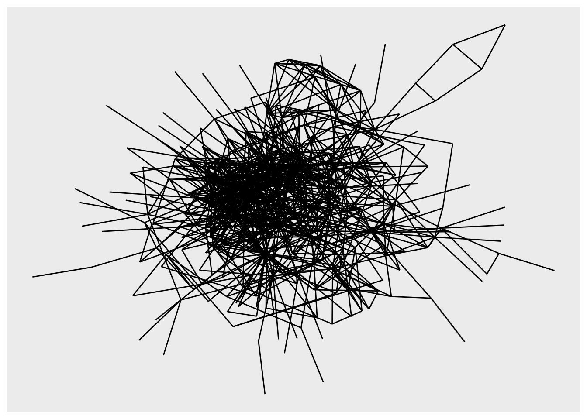
da vi har et relativt stort og dense netværk (der er 984 edges), vil vi måske gerne gøre dem mindre visuelt dominerende. I geom_edge_* funktionerne kan vi ændre på en række parametre:
width (tykkelsen på linjerne)
- som går fra 0 (ingen tykkelse) til uendeligt tykke.
color (farven på linjerne)
- kan være en hex farvekode, fx. #f50e0a (en variant af rød) eller en navngiven farve. (brug evt. funktionen
edit(colors())til at se de navngivne farver i R)
- kan være en hex farvekode, fx. #f50e0a (en variant af rød) eller en navngiven farve. (brug evt. funktionen
alpha (linjernes ‘gennemsigtighed’)
- som går fra 0 til 1 (0 = helt gennemsigtige, 1 = helt optegnede)
Lad os prøve at sætte en farve, en variant af grå, og en tykkelse, 0.3, og en gennemsigtighed, 0.3.
p <- p + geom_edge_link0(color = "grey70", width = 0.3, alpha = 0.3)
p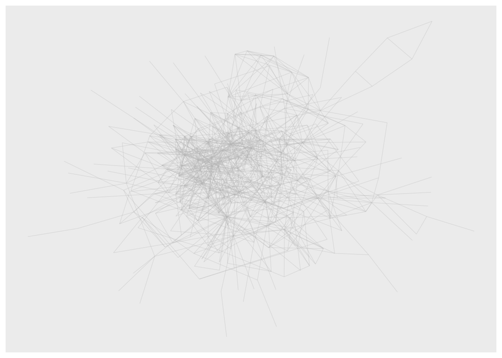
3) Tegn noder
Nu vil vi gerne tilføje laget med noder (i dette tilfælde virksomheder).
Der også et specifikt sæt af geom’er for noder, geom_node_*. Oftest vil vi tegne dem som et ‘punkt’, så vi bruger geom_node_point():
p + geom_node_point()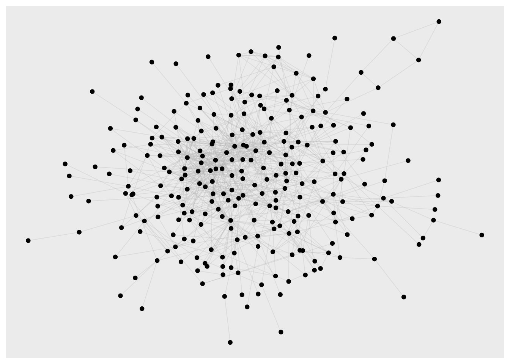
I geom_node_* funktionerne kan vi også ændre på en række parametre:
size (størrelsen på punkterne)
- som går fra 0 (ingen størrelse) til uendelig størrelse.
shape (formen på punktet)

color (farven på punktet/ eller på punktets omkreds - hvis man vælger en af de ‘røde’ shapes fra figuren og sætter en anden fill)
- kan være en hex farvekode, fx. #f50e0a (en variant af rød) eller en navngiven farve. (brug evt. funktionen
edit(colors())til at se de navngivne farver i R)
- kan være en hex farvekode, fx. #f50e0a (en variant af rød) eller en navngiven farve. (brug evt. funktionen
fill (styrer for de røde shapes farven på punktet, mens color så styrer omkredsen)
alpha (linjernes ‘gennemsigtighed’)
- som går fra 0 til 1 (0 = helt gennemsigtige, 1 = helt optegnede)
Lad os sætte en størrelse på 3, en rund shape med farve, nr. 21, en alpha på 0.75, en omkredsfarve (color), sort, og en fill, salmon2.
p <- p + geom_node_point(size = 3, shape = 21, color = "steelblue", fill = "salmon2",alpha = 0.75)
p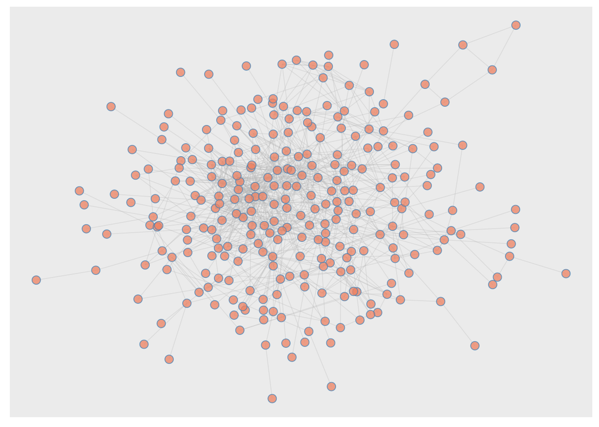
4) Netværkstema (baggrund):
Nu har vi næsten lavet vores simple plot. Der er dog noget med den grå baggrund…. I ggraph ligger der et standard theme til netværksvisualiseringer, theme_graph(), lad os tilføje det.
p <- p + theme_graph()
p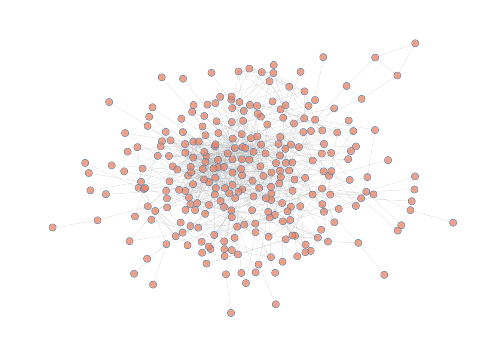
5) Titel mv.
Som det sidte vil vi måske gerne tilføje en forklarende titel til vores visualisering.
p + ggtitle("Virksomhedsnetværket i finanssektoren")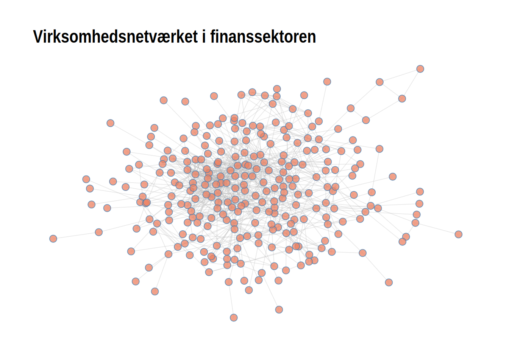
og måske også en undertitel. Det kunne være antallet af noder (eller noget helt andet). Vi vi gerne vil ‘blande’ et tal ind uden at skrive det selv. Fx så vi kan opdatere analysen og køre koden uden at ændre plotkoden, kan vi bruge paste0() til at sætte tekst og outputtet fra en funktion sammen: paste0("n = ", vcount(net_affil_l)) vil sætte “n =” sammen med outputtet fra vcount() som er antallet af noder.
Vi kan også tilføje en caption i hjørnet med labs(caption =) faktisk kan man også bestemme title og subtitle med labs.
#Enten
p + ggtitle("Virksomhedsnetværket i finanssektoren", subtitle = paste0("n = ", vcount(net_affil_l))) + labs(caption = "datakilde: Danish Elitenetwork 2017")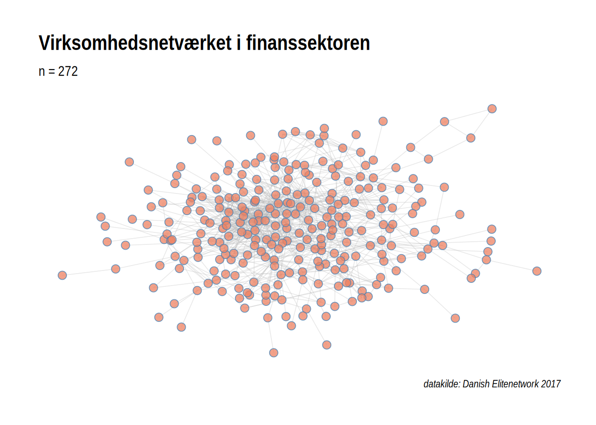
#Eller det hele med labs
p <- p + labs(title = "Virksomhedsnetværket i finanssektoren",
subtitle = paste0("n = ", vcount(net_affil_l)),
caption = "datakilde: Danish Elitenetwork 2017")Opsummerende kan vi gøre det hele på en gang i stedet:
p <- ggraph(net_affil_l) +
geom_edge_link0(color = "grey70", width = 0.3, alpha = 0.3) +
geom_node_point(size = 3, shape = 21, color = "steelblue",
fill = "salmon2",alpha = 0.75) +
theme_graph() +
labs(title = "Virksomhedsnetværket i finanssektoren",
subtitle = paste0("n = ", vcount(net_affil_l)),
caption = "datakilde: Danish Elitenetwork 2017")Using "stress" as default layoutp 6) Gem plot som en billede fil
ggplot2 har en funktion, der hedder ggsave() som gemmer det aktive plot (eller et bestemt plot objekt) til en sti vi vælger og et filformat vi bestemmer. Hvis den mappe vi ‘sender’ filen til ikke findes, kan man bruge create.dir = TRUE, så laver R mappen.
Jeg vil gerne gemme til min output mappe (der må gerne stå create.dir = TRUE, også selvom den allerede findes). Og det skal være en png fil.
Andre relevante options er height = og width = . Dem kan I skrue på hvis plottet bliver enten for stort elle for lille i den fil i gemmer.
ggsave(filename = "output/simpelt_plot.png", plot = p, height = 6, width = 6, create.dir = TRUE)Visualisering 2.0 - ‘mapping aesthetics’:
Indtil nu har vi sat nogle faste værdier for størrelse og tykkelse mv. Vi kunne fx godt være interesseret i at lade en variabel styre nodernes farve eller størrelse eller lignende.
Lad os derfor først lige tilføje sektor-variablen til vores netværksobjekt som en vertex attribute:
først vil vi gerne lige sørge for at sector = NA bliver til sector = "Unknown"
den <- den %>% mutate(sector = case_when(is.na(sector)~"Unknown", .default = sector))net_affil_l <- add_vertex_attr(graph = net_affil_l,
data = den %>% select(affiliation, sector, tags) %>% distinct(),
match_var = "affiliation")1) Farve
Hvis man gerne vil lade farven følge værdierne på en variabel, skal man bruge mapping = aes() i geom_* funktionen.
Hvis vi genbruger plot koden for edges, theme og title fra før (men undlader nodes)
p <- ggraph(net_affil_l) +
geom_edge_link0(color = "grey70", width = 0.3, alpha = 0.3) +
theme_graph() +
labs(title = "Virksomhedsnetværket i finanssektoren",
subtitle = paste0("n = ", vcount(net_affil_l)),
caption = "datakilde: Danish Elitenetwork 2017")Using "stress" as default layoutog nu tilføjer en anden variant af geom_node_point() laget.
Vi kan lade size, shape, alpha og color forblive uden for vores mapping, dvs. som konstante værdier. Hvis vi mapper sector henover fill, farver vi indholdet i cirklerne efter sektor
p + geom_node_point(size = 3, shape = 21, alpha = 0.75, color = "grey15",
mapping = aes(fill = sector))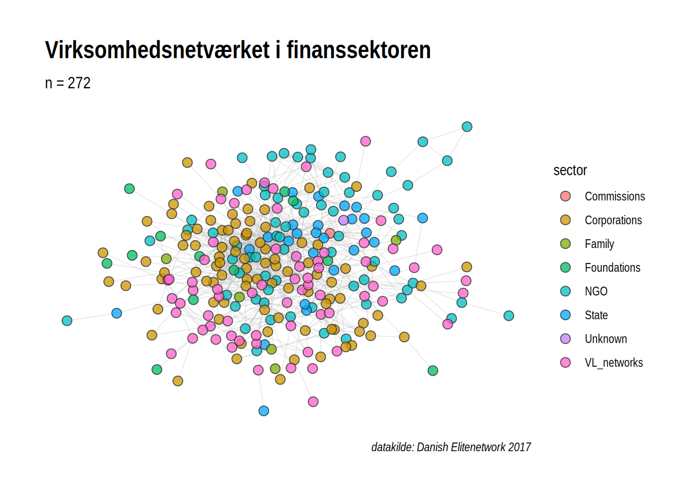
vi kan også mappe sector henover color og lade både indhold og omkreds være styret af sector.
p + geom_node_point(size = 3, shape = 21, alpha = 0.75,
mapping = aes(color = sector, fill = sector))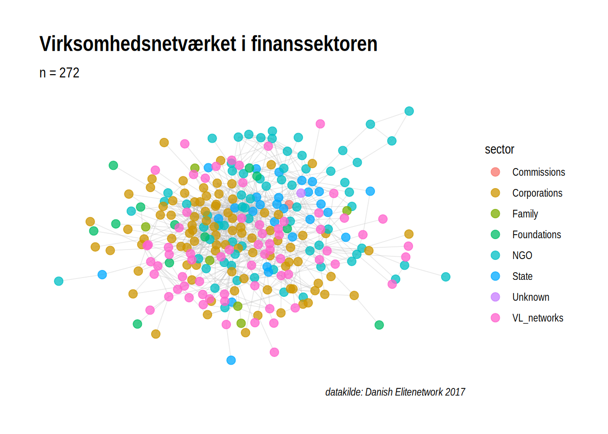
Eller samlet :
p <- ggraph(net_affil_l) +
geom_edge_link0(color = "grey70", width = 0.3, alpha = 0.3) +
geom_node_point(size = 3, shape = 21, alpha = 0.75,
mapping = aes(color = sector, fill = sector)) +
theme_graph() +
labs(title = "Virksomhedsnetværket i finanssektoren",
subtitle = paste0("n = ", vcount(net_affil_l)),
caption = "datakilde: Danish Elitenetwork 2017")Using "stress" as default layoutp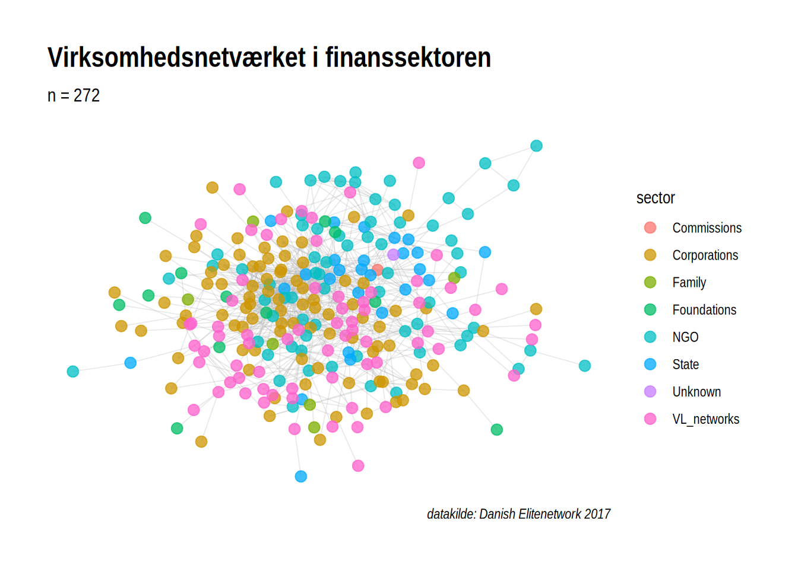
1.1 Farveskalaer for ikke kontinuerte variable
Lad os nu sige vi vælge en anden farveskala: Til det skal vi have fat i et scales_* element.
scale_color_* og scale_fill_* er de to scale elementer vi skal bruge for at ændre farveskalaen på color og fill:
med scale_*_manual() kan man sætte farverne selv.
med scale_*_brewer() kan man bruge værdierne fra en defineret palette
kør fx RColorBrewer::display.brewer.all()
Lad os prøve en farveskala fra brewer
# enten
p + scale_fill_brewer(palette = "Set1") +
scale_color_brewer(palette = "Set1")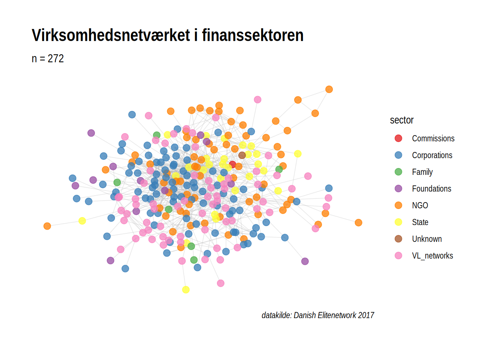
# eller i en linje
p + scale_color_brewer(palette = "Set1", aesthetics = c("color", "fill"))Vi kan også konstruere vores egen farve skale:
colors <- c("Commissions" = "deeppink4", "Corporations" = "steelblue1", "Family" = "forestgreen", "Foundations" ="steelblue4", "NGO" = "salmon1" , "State" = "magenta", "Unknown"= "grey25", "VL_networks" = "brown")og bruge den med scale_*_manual()
p <- p + scale_color_manual(values = colors, aesthetics = c("color", "fill"))
p2) Ændrer legends
Som udgangspunkt får vores legend navn efter den variabel vi mapper. Det kan jo godt vi gerne vil ændre det:
Her kan vi bruge guides() funktionen + guide_legend()
p <- p + guides(fill = guide_legend(title = "Sektor"),
color = guide_legend(title = "Sektor"))
p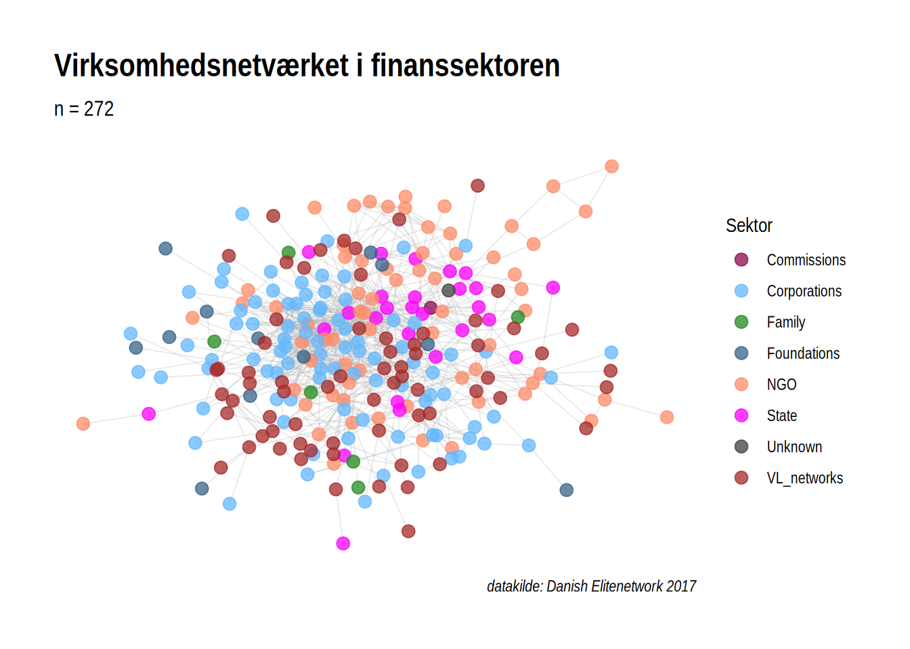
Vi kan også ændre på legends placering: (left, bottom, right (default))
p + theme(legend.position = "bottom")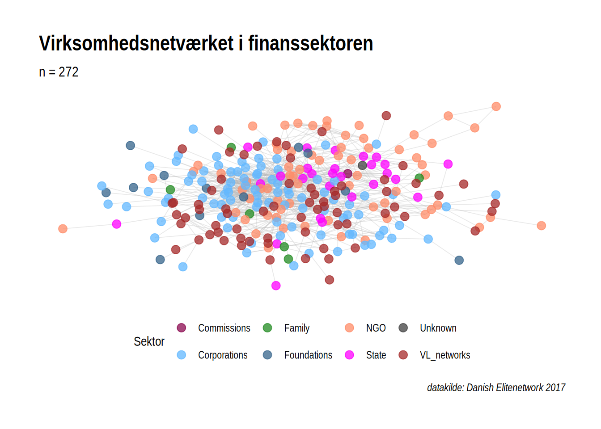
2.1 legend-label rækkefølge og label-værdier
Hvis vi gerne vil ændre rækkefølgen af værdierne på vores legend kan vi definere det i scale_*_* elementet for både color og fill samtidigt.
p + scale_color_manual(values = colors, breaks = c("Family", "VL_networks", "Corporations", "Foundations", "State", "Commissions", "NGO", "Unknown"), aesthetics = c("color", "fill"))Scale for colour is already present.
Adding another scale for colour, which will replace the existing scale.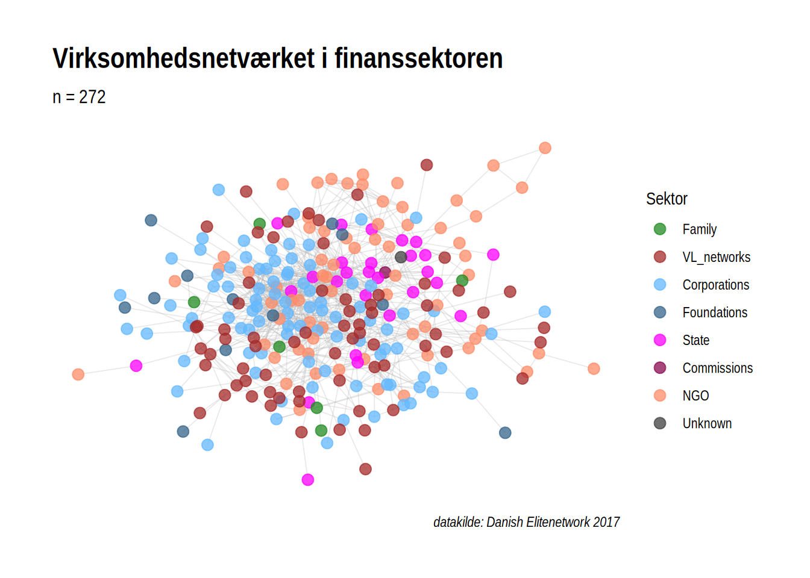
Vi kan også ændre navnene:
p <- p + scale_color_manual(values = colors, breaks = c("Family", "VL_networks", "Corporations", "Foundations", "State", "Commissions", "NGO", "Unknown"),
labels = c("Familie", "VL-grupper", "Virksomheder", "Fonde", "Staten", "Kommissioner", "NGOer", "Ukendt"),
aesthetics = c("color", "fill"))Scale for colour is already present.
Adding another scale for colour, which will replace the existing scale.p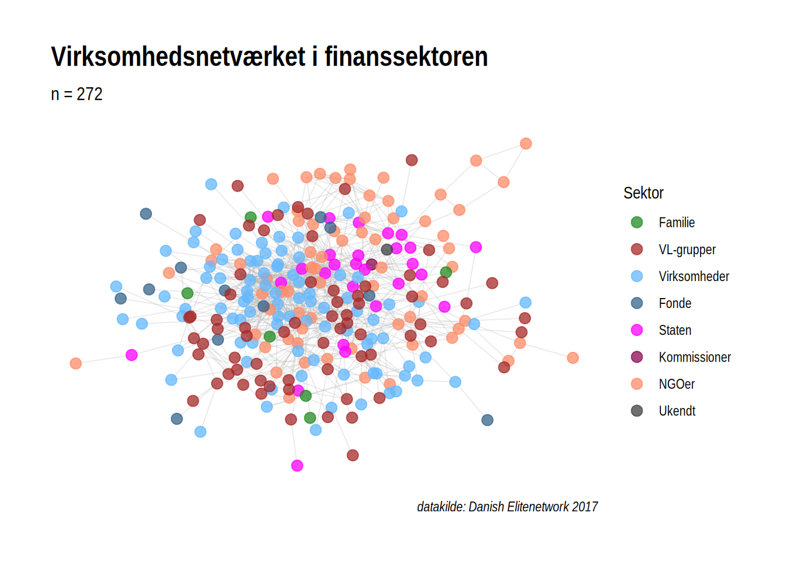
Visualisering 3.0 - ‘mapping aesthetics’ med kontinuerte variable
Lad os beregne betweenness centralitet i vores netværk og lave en rank variabel også
bet <- betweenness(net_affil_l, normalized = T)
bet_rnk <- dense_rank(desc(bet))dem kan vi tilføje til grafobjektet
V(net_affil_l)$bet <- bet
V(net_affil_l)$bet_rnk <- bet_rnkVi gør det samme for closeness (fordi vi skal bruge det senere)
clo <- closeness(net_affil_l, normalized = T)
clo_rnk <- dense_rank(desc(clo))
V(net_affil_l)$clo <- clo
V(net_affil_l)$clo_rnk <- clo_rnk1) Size efter et kontinuert mål (fx. betweenness)
Her sætter vi fill uden for vores mapping og giver den en konstant værdi, og sætter i stedet size ind i mapping’en og lader den følge betweennes værdien
p <- ggraph(net_affil_l) +
geom_edge_link0(color = "grey70", width = 0.3, alpha = 0.3) +
geom_node_point(shape = 21, alpha = 0.75, fill = "salmon2",
mapping = aes(size = bet)) +
theme_graph() +
labs(title = "Virksomhedsnetværket i finanssektoren",
subtitle = paste0("n = ", vcount(net_affil_l)),
caption = "datakilde: Danish Elitenetwork 2017")Using "stress" as default layoutp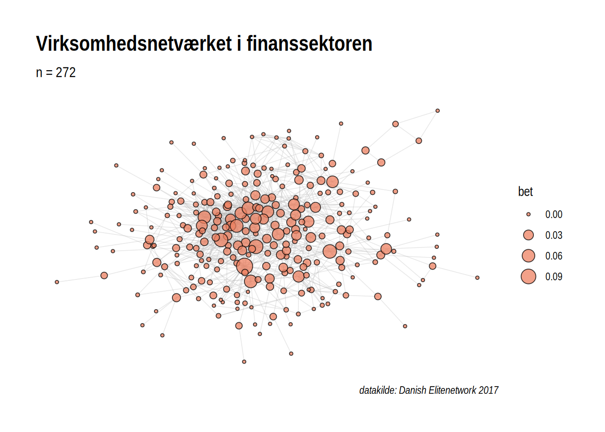
Vi kan også lade størrelse være styret af betweenness og stadige have farve efter sector:
med scale_color_* vælger vi farveskala (her kan vi også sætte legendnavnet med name =)
med scale_size_* vælger vi størrelsesskalaen for punkterne. Da betweenness er et kontinuert mål, bruger vi size_scale_continous(), hvor vi kan sætte en range = c(min, max)
p <- ggraph(net_affil_l) +
geom_edge_link0(color = "grey70", width = 0.3, alpha = 0.3) +
geom_node_point(shape = 21, alpha = 0.75,
mapping = aes(size = bet, fill = sector)) +
scale_fill_brewer(name = "Sektor", palette = "Set1") +
scale_size_continuous(name = "Betwenness centrality", range = c(1,8)) +
theme_graph() +
labs(title = "Virksomhedsnetværket i finanssektoren",
subtitle = paste0("n = ", vcount(net_affil_l)),
caption = "datakilde: Danish Elitenetwork 2017")Using "stress" as default layoutp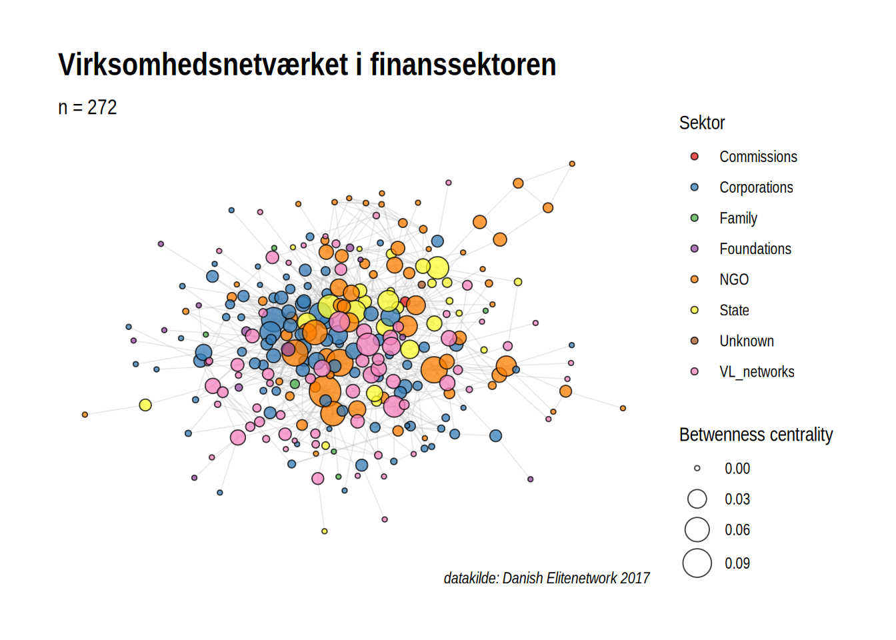
Visualisering 4.0 - rækkefølgen af noder.
Som I kan se plotter den noderne i den rækkefølge de har i netværksobjektet. Her kunne vi måske godt tænke os at de centrale noder bliver plottet til sidst, så de ligger ‘øverst’ på lærredet.
Det er der desværre ikke nogen ‘nem’ måde at gøre på, men vi kan bruge en funktion fra ggraph til at lave et layout først, som vi kan sortere.
layout <- create_layout(net_affil_l, "stress")nu har vi x og y koordinaterne for alle noder samt også deres vertex attributes i et tibble objekt:
names(layout) [1] "x" "y" "circular"
[4] "name" "sector" "tags"
[7] "bet" "bet_rnk" "clo"
[10] "clo_rnk" ".ggraph.orig_index" ".ggraph.index" head(layout)# A tibble: 6 × 12
x y circular name sector tags bet bet_rnk clo clo_rnk
<dbl> <dbl> <lgl> <chr> <chr> <chr> <dbl> <int> <dbl> <int>
1 -0.333 2.55 FALSE A/S DANSK … Corpo… Corp… 1.18e-4 196 0.267 156
2 0.121 -0.812 FALSE Alm. Brand Corpo… Corp… 1.27e-2 57 0.337 51
3 -0.760 -1.35 FALSE Alm. brand… NGO Boar… 2.41e-2 29 0.340 47
4 -0.132 2.29 FALSE Ankenaevne… State Busi… 3.79e-3 117 0.283 130
5 -2.30 -0.0924 FALSE AP Pension Corpo… Corp… 1.28e-2 55 0.350 36
6 -1.32 0.700 FALSE Arbejderne… Corpo… Corp… 1.17e-2 66 0.373 15
# ℹ 2 more variables: .ggraph.orig_index <int>, .ggraph.index <int>Vi kan nu sortere (arrange()) layoutfilen efter betweenness (bet) før vi ‘sender den’ til ggraph() funktionen. Det giver dog et nyt problem, da koordinaterne for edges ikke automatisk følger med:
layout %>% arrange(bet) %>% ggraph() +
geom_edge_link0(color = "grey70", width = 0.3, alpha = 0.3) +
geom_node_point(shape = 21, alpha = 0.75,
mapping = aes(size = bet, fill = sector)) +
scale_fill_brewer(name = "Sektor", palette = "Set1") +
scale_size_continuous(name = "Betwenness centrality", range = c(1,8)) +
theme_graph() +
labs(title = "Virksomhedsnetværket i finanssektoren",
subtitle = paste0("n = ", vcount(net_affil_l)),
caption = "datakilde: Danish Elitenetwork 2017")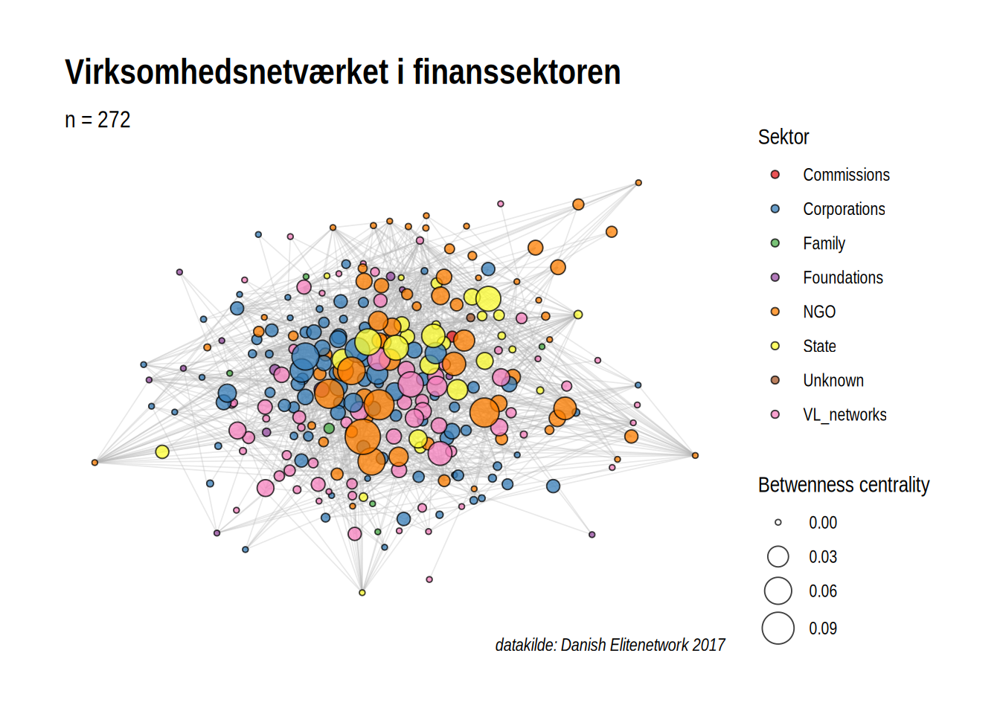
UPS!!!
Jeg har skrevet en funktion get_edge_coord() som sources med networkfunctions.R scriptet.
hvis I sætter den funktion ind i geom_edge_link0 elementet som data = get_edge_coord('netværksobjeltet', 'layout tibble'), så beregner den de rigtige koordinater, som så skal mappes over x, y, xend og yend i aes()
p <- layout %>% arrange(bet) %>% ggraph() +
geom_edge_link0(data = get_edge_coord(net_affil_l, layout), mapping = aes(x = x, y = y, xend = xend, yend = yend), color = "grey70", width = 0.3, alpha = 0.3) +
geom_node_point(shape = 21, alpha = 0.75,
mapping = aes(size = bet, fill = sector)) +
scale_fill_brewer(name = "Sektor", palette = "Set1") +
scale_size_continuous(name = "Betwenness centrality", range = c(1,8)) +
theme_graph() +
labs(title = "Virksomhedsnetværket i finanssektoren",
subtitle = paste0("n = ", vcount(net_affil_l)),
caption = "datakilde: Danish Elitenetwork 2017")
p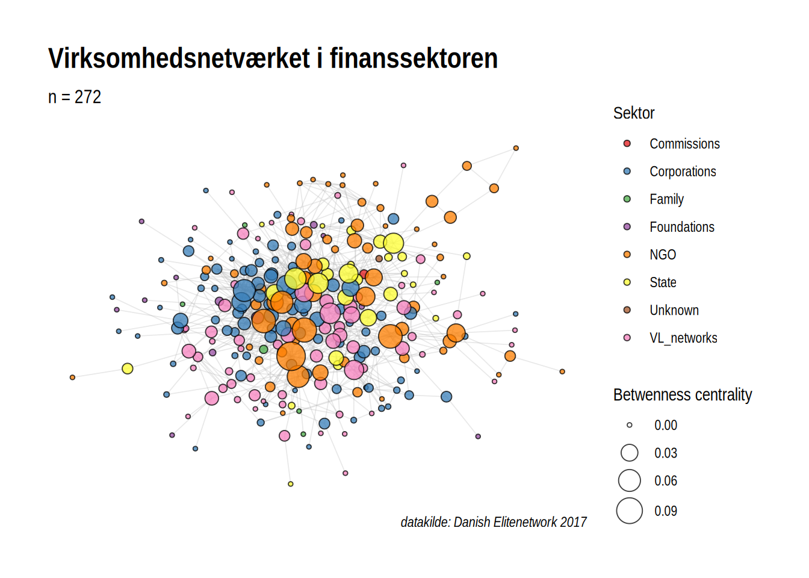
Skrifttyper, tekststørrelser mv.
Det er meget simpelt efterfølgende at ændre på teksttype og størrelse i ens plot.
base_family sætter skritftypen (serif, sans, mono) for hele plottet
base_size sætter skriftstørrelsen for hele plottet
title_size, sætter titel skrifstørrelse,
subtitle_size, sætter skriftstørrelse for underoverskrift
osv.
p <- p + theme_graph(base_family = "serif", base_size = 12, title_size = 16, subtitle_size = 10)
p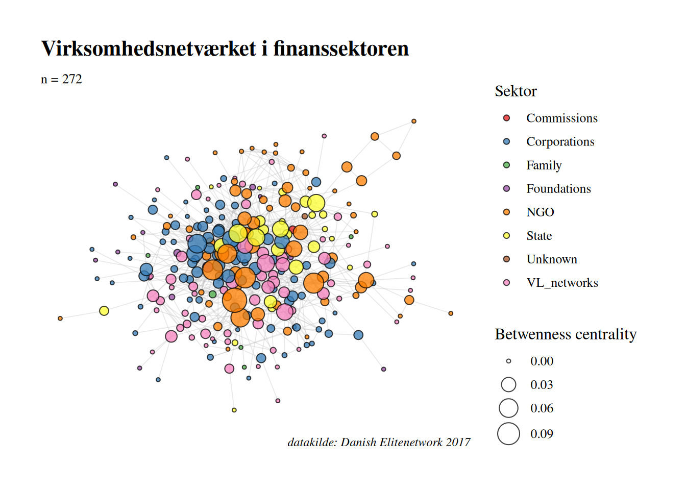
Labels på et plot…! geom_node_label() og filter =
Vi har sjældent brug for at sætte label på alle noder, men vi vil måske gerne sætte labels på de 3 mest centrale noder? Eller på et udvalg af noder. Til det kan vi bruge geom’et geom_node_label() og ‘mappe’ vertex attribute’en name hen over koordinaterne.
Fordi vi ikke vil plotte alle label, bruger vi parameteret filter i aes():
p + geom_node_label(mapping = aes(filter = bet_rnk<=3, label = name))Warning in geom_node_label(mapping = aes(filter = bet_rnk <= 3, label = name)):
Ignoring unknown parameters: `label.size`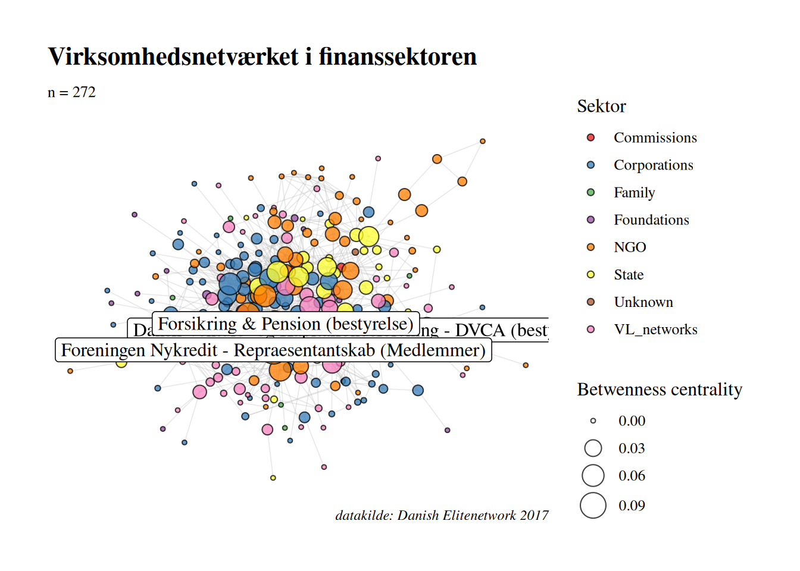
Hvis labels ligger oven i hinanden kan det være nyttigt at tilføje parameteret repel = TRUE.
p + geom_node_label(mapping = aes(filter = bet_rnk<=3, label = name), repel = T)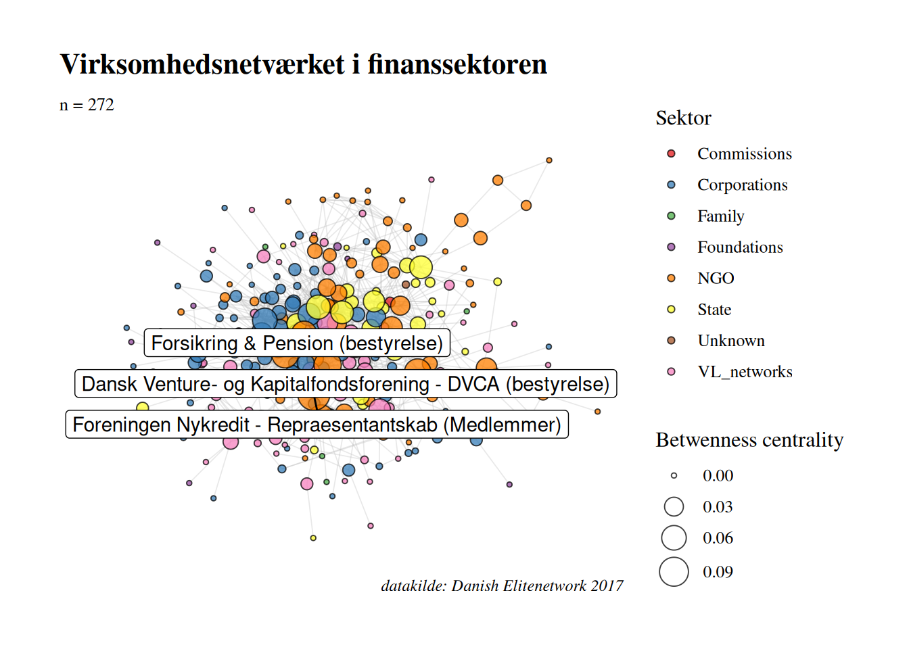
Måske er mine labels for store? Vi kan ændre på størrelsen og også på deres gennemsigtighed (alpha) samt på text typen family så den passer til resten af plottet
p <- p + geom_node_label(mapping = aes(filter = bet_rnk<=3, label = name), size = 3, alpha = 0.8, family = "serif", repel = T)
p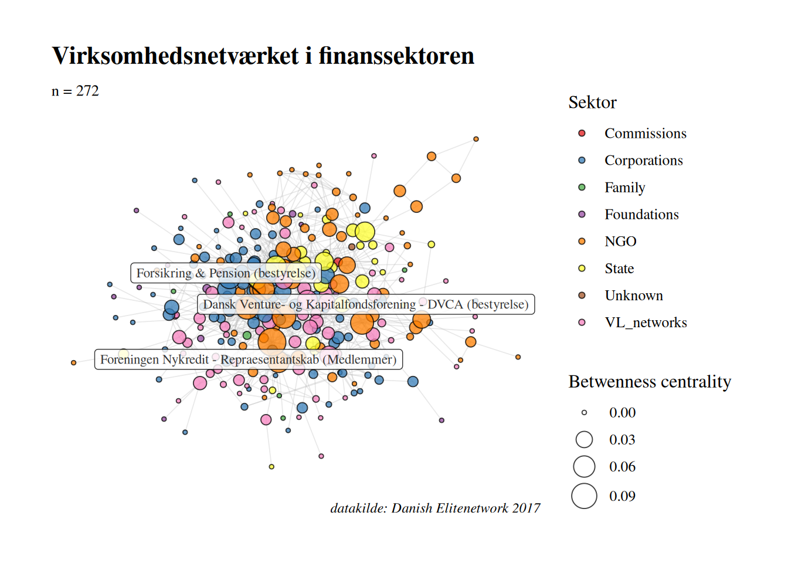
det ser efterhånden meget godt ud… Måske er jeg ked af at størrelsen på cirklerne i min color legend er så små. Det kan jeg også justere på med guides() og guide_legend() :
Override legend aesthetics…
p <- p + guides(fill = guide_legend(override.aes = list(size = 4)))
p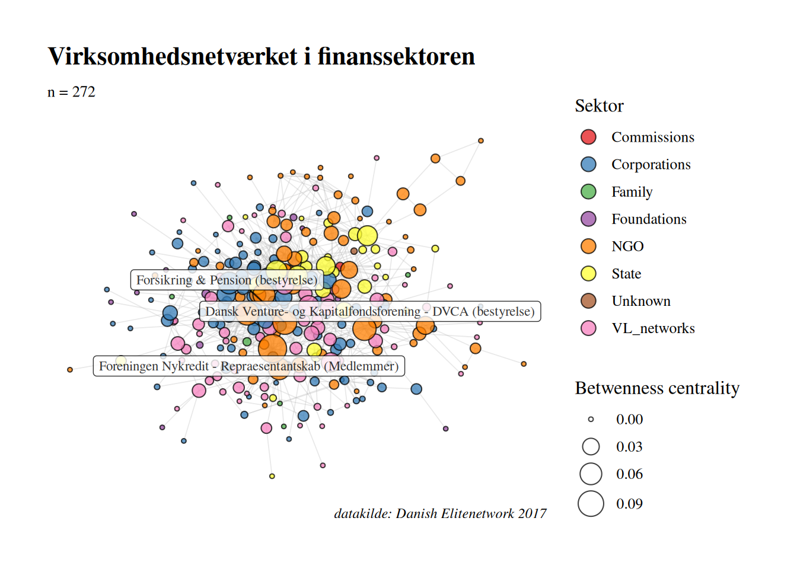
Lad os gemme det plot også :
ggsave(filename = "output/betweennescentralitet_plot.png", plot = p, height = 7, width = 9)Standard units på height og width er inches (in). Måske er det lettere for os at bruge cm.
ggsave(filename = "output/betweennescentralitet_plot.png", plot = p, height = 16, width = 20, units = "cm")Kig på filen og juster størrelsen, så forholdet mellem plot og lærred (og tekst- og punktstørrelse mv.) ser fornuftigt ud.
Sammensætning af plots med ggarrange
Lad os efter samme fremgangsmåde som før lave et plot med closeness i stedet:
p_clo <- layout %>% arrange(clo) %>% ggraph() +
geom_edge_link0(data = get_edge_coord(net_affil_l, layout), mapping = aes(x = x, y = y, xend = xend, yend = yend), color = "grey70", width = 0.3, alpha = 0.3) +
geom_node_point(shape = 21, alpha = 0.75,
mapping = aes(size = clo, fill = sector)) +
geom_node_label(mapping = aes(filter = clo_rnk<=3, label = name), size = 3, alpha = 0.8, family = "serif", repel = T) +
scale_fill_brewer(name = "Sektor", palette = "Set1") +
scale_size_continuous(name = "Closeness centrality", range = c(1,8)) +
theme_graph(base_family = "serif",
base_size = 12,
title_size = 16,
subtitle_size = 10) +
labs(title = "Virksomhedsnetværket i finanssektoren",
subtitle = paste0("n = ", vcount(net_affil_l)),
caption = "datakilde: Danish Elitenetwork 2017") +
guides(fill = guide_legend(override.aes = list(size = 4)))
p_clo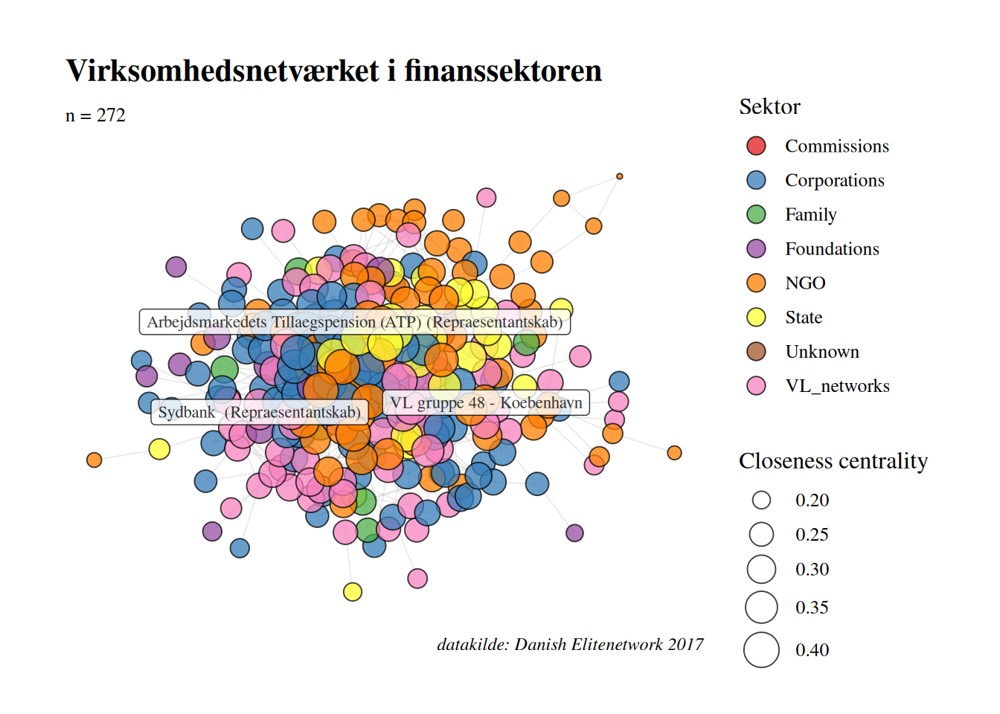
Med funktionen ggarrange() fra ggpubr kan vi sætte plots sammen:
Først vil vi måske gerne lige fjerne legends for size, da de nu betyder to forskellige ting:
p <- p + guides(size = "none")
p_clo <- p_clo + guides(size = "none")og ændre overskriften:
p <- p + labs(title = "Betwenness", subtitle = "", caption = "")
p_clo <- p_clo + labs(title = "Closeness", subtitle = "", caption = "")ggarrange(plotlist = list(p, p_clo), common.legend = T, legend = "right")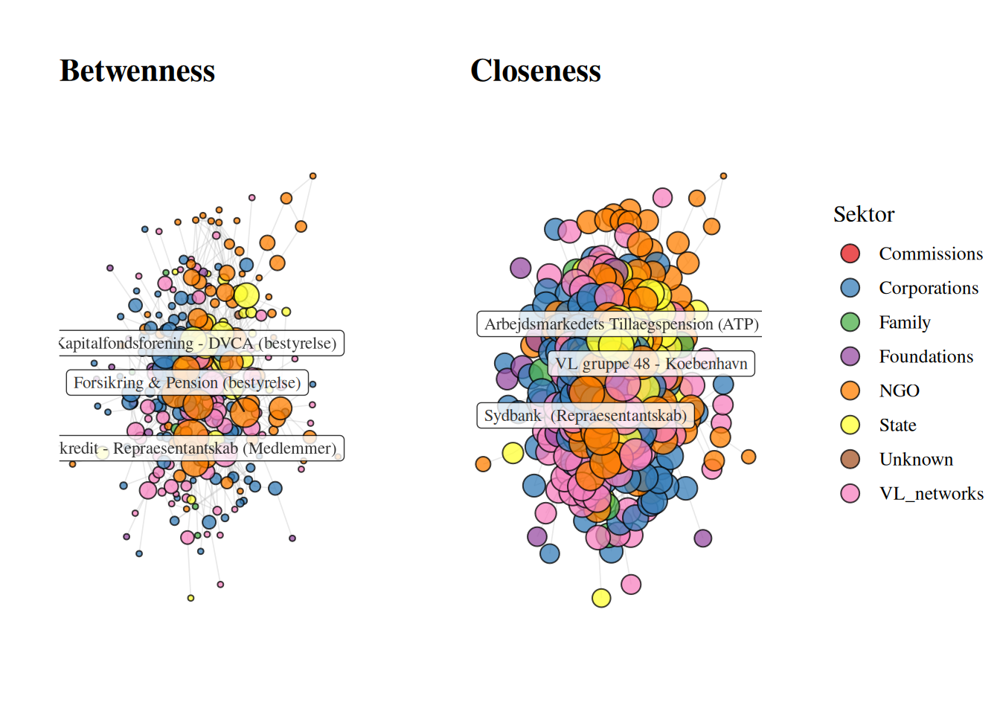
Visualisering af forskellige mål… (med ggplot)
Vi kan beregne en række centralitetsmål:
metrics <- tibble(
name = V(net_affil_l)$name,
sector = V(net_affil_l)$sector,
tags = V(net_affil_l)$tags,
degree = degree(net_affil_l),
betweenness = betweenness(net_affil_l, normalized = T),
local_betweenness = betweenness(net_affil_l, cutoff = 2, normalized = T),
closeness = closeness(net_affil_l),
brokerage = 1/constraint(net_affil_l)
) Korrelationen mellem to forskellige mål
Vi kan fx plotte korrelationen mellem betweenness og brokerage
metrics %>%
ggplot() +
geom_point(aes(x = brokerage, y = betweenness, color=sector, size=degree)) +
#geom_label(aes(x = brokerage, y = closeness, label = name2)) +
scale_color_manual(values=colors) +
scale_x_continuous(breaks = seq(1,max(metrics$brokerage), 1), name = "1/Burts constraint") +
scale_y_continuous(name = "Betweenness") +
guides(color = guide_legend(override.aes = list(size = 4), title = "Virksomhedstype"),
size = guide_legend(title = "Degree centralitet")) +
theme_bw(base_family = "serif")
Et mål, men delt op på en variabel - facet_wrap()
Der er ikke ret mange noder i kategorierne Commissions og Unknown, så dem filterer vi lige fra her.
Vi kan nu prøve at se hvor stor en andel af noderne i de forskellige sektorer, der ligger hhv. højt og lavt på fx brogerage.
metrics %>% filter(!sector %in% c("Commissions", "Unknown")) %>%
ggplot() +
geom_density(aes(x = brokerage, fill=sector)) +
labs(y='share') +
facet_wrap(~sector) +
scale_fill_manual(values=colors) +
guides(fill = "none") +
theme_minimal(base_family = "serif") +
theme(strip.text.x = element_text(size = 12, face = "bold")) 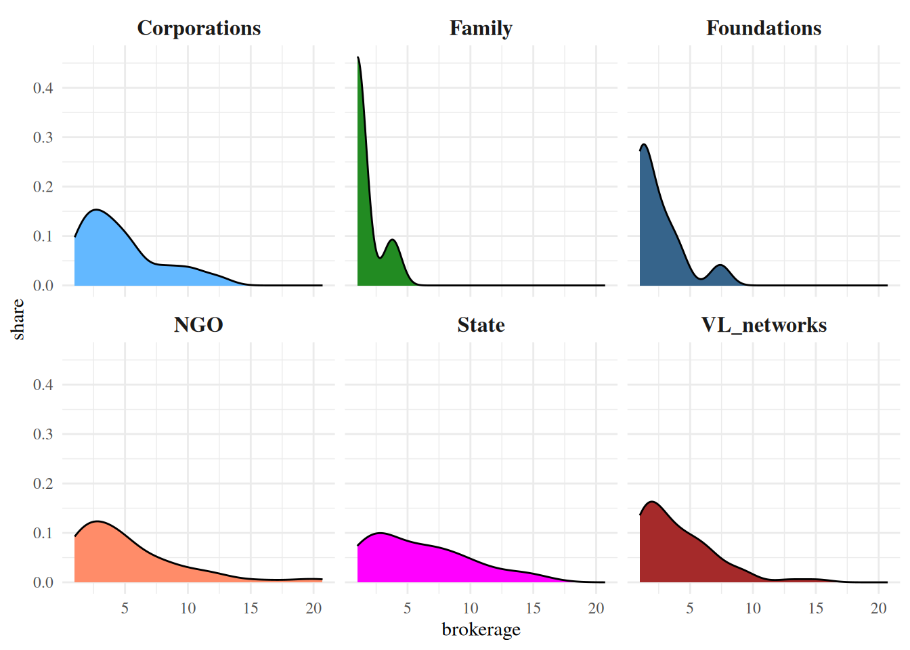
En masse mål i forhold til hinanden
Her kan I bruge min cor_plots funktion, husk at droppe variable i metrics der ikke er centralitetsvariable (her name og sector)
p_cor <- cor_plots(metrics_table = metrics %>% select(-name,-sector, -tags))
p_cor
Beregning af gennemsnit mv. delt op på en variabel
Lad os kigge på tags, er der forskel på centralitetsmålene, hvis vi deler noderne op efter deres tags:
Første skal vi lige huske at en node kan have flere tags. Men separate_longer_delim() laver vi en nu data tibble, med en række for hver virksomhed for hver tag.
metrics_long <- metrics %>% separate_longer_delim(tags, delim = ", ")Vi vil gerne nøjes med at kigge på vores finans tags, så vi nøjes med de rækker:
metrics_long <- metrics_long %>% filter(tags %in% finans_tags)metrics_long %>% count(tags)# A tibble: 6 × 2
tags n
<chr> <int>
1 Banks 50
2 FINA 50
3 Finance 157
4 Insurance 31
5 Pensions 32
6 Venture- og kapitalfonde 18Vi lægger lige FINA og Finance sammen og tager kun unikke name + tags kombinationer (for at slette den ene række for dem, der havde både FINA og Finance. .keep_all = TRUE gør at vi beholder alle kolonner.
metrics_long <- metrics_long %>% mutate(tags = case_when(tags == "FINA"~ "Finance", .default = tags)) %>% distinct(name, tags, .keep_all = TRUE)Nu kan vi med group_by og summarise beregne hhv mean max og min for udvalgte centralitetsmål opdelt på tags (som vi gruppere efter)
metrics_long %>% group_by(tags) %>% summarise(n = n_distinct(name),
across(.cols = c("degree", "closeness","betweenness", "brokerage"),
.fns = list("Mean" = mean, "Max" = max, "Min" = min)))# A tibble: 5 × 14
tags n degree_Mean degree_Max degree_Min closeness_Mean closeness_Max
<chr> <int> <dbl> <dbl> <dbl> <dbl> <dbl>
1 Banks 50 10.4 35 1 0.00118 0.00147
2 Finance 157 8.30 35 1 0.00110 0.00147
3 Insurance 31 8.42 31 1 0.00115 0.00146
4 Pensions 32 9.56 31 1 0.00118 0.00148
5 Venture-… 18 4.67 25 1 0.00100 0.00137
# ℹ 7 more variables: closeness_Min <dbl>, betweenness_Mean <dbl>,
# betweenness_Max <dbl>, betweenness_Min <dbl>, brokerage_Mean <dbl>,
# brokerage_Max <dbl>, brokerage_Min <dbl>Bonus: Hvordan linker virksomheder med forskellige egenskaber til hinanden
Lad os kigge på sektor
## Forholdet mellem ties indenfor og mellem tags
# vi henter en edgelist ud fra netværksobjektet
e <- as_data_frame(net_affil_l, what = "edges")
# fordi det er undirected vil vi gerne 'fordoble' det så from-to og to-from er med
e <- tibble(from = c(e$from, e$to),
to = c(e$to, e$from))
# dernæst kan vi left_join'e tags på for henholdsvis from variablen og to variablen.
e <- e %>%
left_join(., tibble(from = V(net_affil_l)$name, from_sector = V(net_affil_l)$sector)) %>%
left_join(., tibble(to = V(net_affil_l)$name, to_sector = V(net_affil_l)$sector))Joining with `by = join_by(from)`
Joining with `by = join_by(to)`# og lave en summarise(....., .by = from_tag), hvor vi 1. tæller hvor mange der har tag'et og dernæst hvor mange af hvert tags forbindelser, der er til det samme tag og hvor mange der er til et andet tag.
e %>% summarise(nodes = n_distinct(from) , ties_within = sum(from_sector == to_sector),
ties_out = sum(from_sector != to_sector),
share_out = ties_out / (ties_within + ties_out), .by = from_sector)# A tibble: 8 × 5
from_sector nodes ties_within ties_out share_out
<chr> <int> <int> <int> <dbl>
1 Corporations 89 304 358 0.541
2 NGO 68 248 365 0.595
3 State 27 88 177 0.668
4 Commissions 1 0 8 1
5 Unknown 1 0 4 1
6 Family 6 0 9 1
7 Foundations 12 0 44 1
8 VL_networks 68 24 317 0.930Eller hvad med andel af out-going ties fra sektor til sektor:
sector_tie_table <- xtabs(e, formula = ~from_sector + to_sector)
diag(sector_tie_table) <- 0
prop.table(sector_tie_table, margin = 1) %>% round(3) to_sector
from_sector Commissions Corporations Family Foundations NGO State Unknown
Commissions 0.000 0.125 0.000 0.000 0.000 0.875 0.000
Corporations 0.003 0.000 0.000 0.050 0.441 0.162 0.006
Family 0.000 0.000 0.000 0.000 0.556 0.222 0.000
Foundations 0.000 0.409 0.000 0.000 0.318 0.068 0.000
NGO 0.000 0.433 0.014 0.038 0.000 0.148 0.003
State 0.040 0.328 0.011 0.017 0.305 0.000 0.006
Unknown 0.000 0.500 0.000 0.000 0.250 0.250 0.000
VL_networks 0.000 0.382 0.006 0.028 0.420 0.164 0.000
to_sector
from_sector VL_networks
Commissions 0.000
Corporations 0.338
Family 0.222
Foundations 0.205
NGO 0.364
State 0.294
Unknown 0.000
VL_networks 0.000